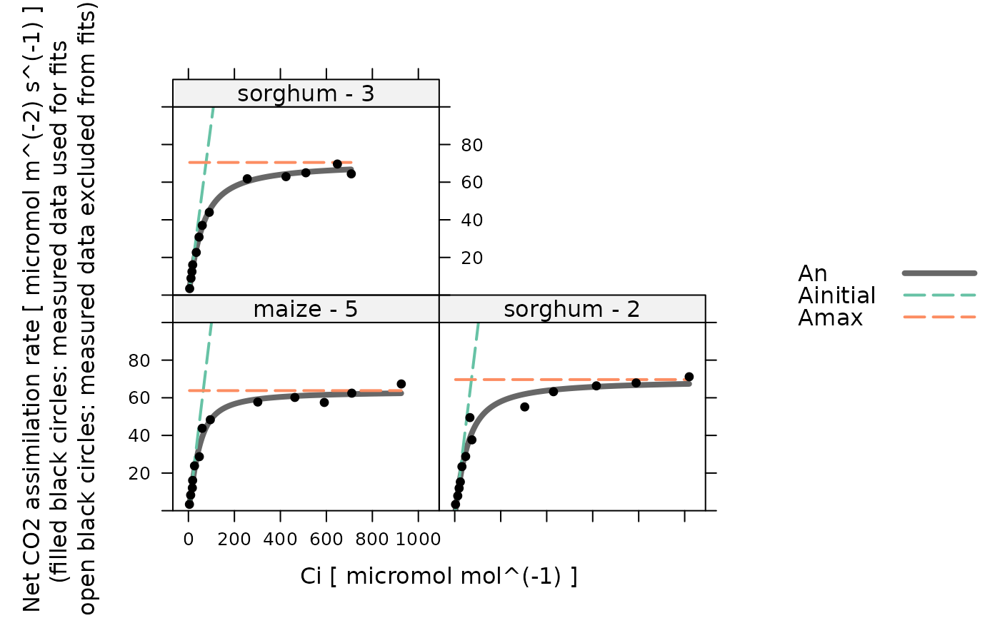

Fits a hyperbolic C4 assimilation model to an experimental curve
fit_c4_aci_hyperbola.RdFits an empirical hyperbola model to an experimentally measured C4 A-Ci curve.
It is possible to fit the following parameters: c4_curvature,
c4_slope, rL, and Vmax.
By default, all of these parameters are fit.
Best-fit parameters are found using maximum likelihood fitting, where the
optimizer (optim_fun) is used to minimize the error function (defined
by error_function_c4_aci_hyperbola).
Once best-fit parameters are found, confidence intervals are calculated
using confidence_intervals_c4_aci_hyperbola.
See below for more details.
Usage
fit_c4_aci_hyperbola(
replicate_exdf,
a_column_name = 'A',
ci_column_name = 'Ci',
sd_A = 'RMSE',
optim_fun = optimizer_nmkb(1e-7),
lower = list(),
upper = list(),
fit_options = list(),
relative_likelihood_threshold = 0.147,
hard_constraints = 0,
calculate_confidence_intervals = TRUE
)Arguments
- replicate_exdf
An
exdfobject representing one CO2 response curve.- a_column_name
The name of the column in
replicate_exdfthat contains the net assimilation inmicromol m^(-2) s^(-1).- ci_column_name
The name of the column in
replicate_exdfthat contains the intercellular CO2 concentration inmicromol mol^(-1).- sd_A
A value of the standard deviation of measured
Avalues, or the name of a method for determining the deviation; currently, the only supported option is'RMSE'.- optim_fun
An optimization function that accepts the following input arguments: an initial guess, an error function, lower bounds, and upper bounds. It should return a list with the following elements:
par,convergence,feval, andconvergence_msg. Seeoptimizersfor a list of available options.- lower
A list of named numeric elements representing lower bounds to use when fitting. Values supplied here override the default values (see details below). For example,
lower = list(Vmax = 10)sets the lower limit forVmaxto 10 micromol / m^2 / s.- upper
A list of named numeric elements representing upper bounds to use when fitting. Values supplied here override the default values (see details below). For example,
upper = list(Vmax = 200)sets the upper limit forVmaxto 200 micromol / m^2 / s.- fit_options
A list of named elements representing fit options to use for each parameter. Values supplied here override the default values (see details below). Each element must be
'fit','column', or a numeric value. A value of'fit'means that the parameter will be fit; a value of'column'means that the value of the parameter will be taken from a column inexdf_objof the same name; and a numeric value means that the parameter will be set to that value. For example,fit_options = list(rL = 0, Vmax = 'fit', c4_curvature = 'column')means thatrLwill be set to 0,Vmaxwill be fit, andc4_curvaturewill be set to the values in thec4_curvaturecolumn ofreplicate_exdf.- relative_likelihood_threshold
To be passed to
confidence_intervals_c4_aci_hyperbolawhencalculate_confidence_intervalsisTRUE.- hard_constraints
To be passed to
calculate_c4_assimilation_hyperbola; see that function for more details.- calculate_confidence_intervals
A logical value indicating whether or not to estimate confidence intervals for the fitting parameters using
confidence_intervals_c4_aci_hyperbola.
Details
This function calls calculate_c4_assimilation_hyperbola to
calculate values of net assimilation. The user-supplied optimization function
is used to vary the values of c4_curvature, c4_slope, rL,
and Vmax to find ones that best reproduce the experimentally measured
values of net assimilation. By default, the following options are used for the
fits:
c4_curvature: lower = -10, upper = 10, fit_option ='fit'c4_slope: lower = -50, upper = 1000, fit_option ='fit'rL: lower = -10, upper = 100, fit_option ='fit'Vmax: lower = -50, upper = 1000, fit_option ='fit'
With these settings, all of the parameters are fit during the process (see
fit_options above). The bounds are chosen liberally to avoid any bias.
An initial guess for the parameters is generated by calling
initial_guess_c4_aci_hyperbola. Note that any fixed values
specified in the fit options will override the values returned by the guessing
function.
The fit is made by creating an error function using
error_function_c4_aci_hyperbola and minimizing its value using
optim_fun, starting from the initial guess described above. The
optimizer_nmkb optimizer is used by default since it has been
found to reliably return great fits. However, it is a fast optimizer that can
get stuck in local minima. If it seems to be returning bad fits, consider
using the optimizer_deoptim optimizer instead, but be aware that
the fits will take more time to complete.
Unlike the model represented by calculate_c4_assimilation, the
model in calculate_c4_assimilation_hyperbola is smooth in the
sense that small changes in the input parameters cause small changes in its
outputs. Because of this, it is a fairly easy model to fit.
This function assumes that replicate_exdf represents a single
C4 A-Ci curve. To fit multiple curves at once, this function is often used
along with by.exdf and consolidate.
Value
A list with two elements:
fits: Anexdfobject including the original contents ofreplicate_exdfalong with several new columns:The fitted values of net assimilation will be stored in a column whose name is determined by appending
'_fit'to the end ofa_column_name; typically, this will be'A_fit'.Residuals (measured - fitted) will be stored in a column whose name is determined by appending
'_residuals'to the end ofa_column_name; typically, this will be'A_residuals'.Values of fitting parameters will be stored in the
c4_curvature,c4_slope,rL, andVmaxcolumns.The other outputs from
calculate_c4_assimilation_hyperbolawill be stored in columns with the usual names:Ag,Ainitial,Amax,An,c4_curvature,c4_slope,rL,Vinitial,Vmax, andc4_assimilation_hyperbola_msg.
fits_interpolated: Anexdfobject including the calculated assimilation rates at a fine spacing ofCivalues (step size of 1micromol mol^(-1)).parameters: Anexdfobject including the identifiers, fitting parameters, and convergence information for the A-Ci curve:The best-fit values are stored in the
c4_curvature,c4_slope,rL, andVmax. Ifcalculate_confidence_intervalsisTRUE, upper and lower limits for each of these parameters will also be included.The
convergencecolumn indicates whether the fit was successful (==0) or if the optimizer encountered a problem (!=0).The
fevalcolumn indicates how many cost function evaluations were required while finding the optimal parameter values.The residual stats as returned by
residual_statsare included as columns with the default names:dof,RSS,RMSE, etc.The Akaike information criterion is included in the
AICcolumn.
Examples
# Read an example Licor file included in the PhotoGEA package
licor_file <- read_gasex_file(
PhotoGEA_example_file_path('c4_aci_1.xlsx')
)
# Define a new column that uniquely identifies each curve
licor_file[, 'species_plot'] <-
paste(licor_file[, 'species'], '-', licor_file[, 'plot'] )
# Organize the data
licor_file <- organize_response_curve_data(
licor_file,
'species_plot',
c(9, 10, 16),
'CO2_r_sp'
)
# Fit just one curve from the data set (it is rare to do this).
one_result <- fit_c4_aci_hyperbola(
licor_file[licor_file[, 'species_plot'] == 'maize - 5', , TRUE]
)
# Fit all curves in the data set (it is more common to do this)
aci_results <- consolidate(by(
licor_file,
licor_file[, 'species_plot'],
fit_c4_aci_hyperbola
))
# View the fitting parameters for each species / plot
col_to_keep <- c(
'species', 'plot', # identifiers
'c4_curvature', 'c4_slope', 'rL', 'Vmax', # best estimates for parameter values
'dof', 'RSS', 'MSE', 'RMSE', 'RSE', # residual stats
'convergence', 'convergence_msg', 'feval', 'optimum_val' # convergence info
)
aci_results$parameters[ , col_to_keep, TRUE]
#> species [UserDefCon] (NA) plot [UserDefCon] (NA)
#> 1 maize 5
#> 2 sorghum 2
#> 3 sorghum 3
#> c4_curvature [fit_c4_aci_hyperbola] (dimensionless)
#> 1 0.6976615
#> 2 0.5614384
#> 3 0.5236451
#> c4_slope [fit_c4_aci_hyperbola] (mol m^(-2) s^(-1))
#> 1 1.0100960
#> 2 0.9970135
#> 3 0.9282023
#> rL [fit_c4_aci_hyperbola] (micromol m^(-2) s^(-1))
#> 1 1.3225714
#> 2 2.7695450
#> 3 0.7192808
#> Vmax [fit_c4_aci_hyperbola] (micromol m^(-2) s^(-1))
#> 1 65.12738
#> 2 72.43272
#> 3 71.18932
#> dof [residual_stats] (NA) RSS [residual_stats] ((micromol m^(-2) s^(-1))^2)
#> 1 9 104.63148
#> 2 9 220.78920
#> 3 9 27.39311
#> MSE [residual_stats] ((micromol m^(-2) s^(-1))^2)
#> 1 8.048575
#> 2 16.983784
#> 3 2.107162
#> RMSE [residual_stats] (micromol m^(-2) s^(-1))
#> 1 2.837001
#> 2 4.121139
#> 3 1.451607
#> RSE [residual_stats] (micromol m^(-2) s^(-1))
#> 1 3.409651
#> 2 4.952992
#> 3 1.744614
#> convergence [fit_c4_aci_hyperbola] ()
#> 1 0
#> 2 0
#> 3 0
#> convergence_msg [fit_c4_aci_hyperbola] () feval [fit_c4_aci_hyperbola] ()
#> 1 Successful convergence 318
#> 2 Successful convergence 263
#> 3 Successful convergence 359
#> optimum_val [fit_c4_aci_hyperbola] ()
#> 1 32.00192
#> 2 36.85588
#> 3 23.29093
# View the fits for each species / plot
plot_c4_aci_hyperbola_fit(aci_results, 'species_plot', ylim = c(0, 100))

# View the residuals for each species / plot
lattice::xyplot(
A_residuals ~ Ci | species_plot,
data = aci_results$fits$main_data,
type = 'b',
pch = 16,
auto = TRUE,
grid = TRUE,
xlab = paste('Intercellular CO2 concentration [', aci_results$fits$units$Ci, ']'),
ylab = paste('Assimilation rate residuals [', aci_results$fits$units$A_residuals, ']')
)